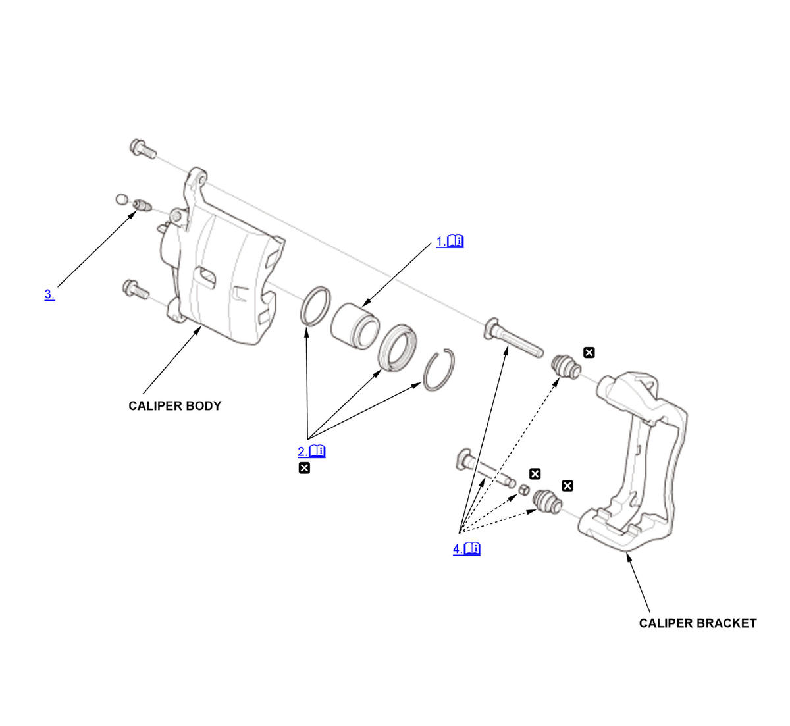

Front Brake Caliper Overhaul (Except Type-R/Si): Disassembly: Procedure
NOTE:
Numbered call-outs in figure pertain to list numbers in following procedure.

Courtesy of HONDA, U.S.A., INC. |
Detailed information, notes, and precautions |
 |
Replace |
- Piston - Remove
1. Set the wooden block (A) or several shop towels in the caliper body (B) as shown. 2. Blow out the piston (C) with compressed air gradually, and remove the piston from the caliper body.
NOTE: Do not put your hand into the caliper body because the piston will come out forcibly from the caliper body.
- Boot Ring, Piston Boot, and Piston Seal - Remove
NOTE: Be careful not to damage the inner surface of the cylinder wall with the tool.
- Bleed Screw - Remove
- Caliper Pin, Pin Boot, and Pin Bushing - Remove
NOTE: The upper caliper pin and the lower caliper pin are different. During installation, make sure the caliper pins are in the proper positions.